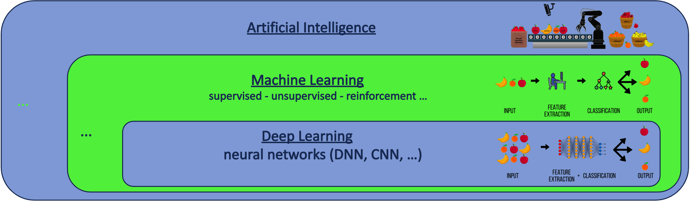
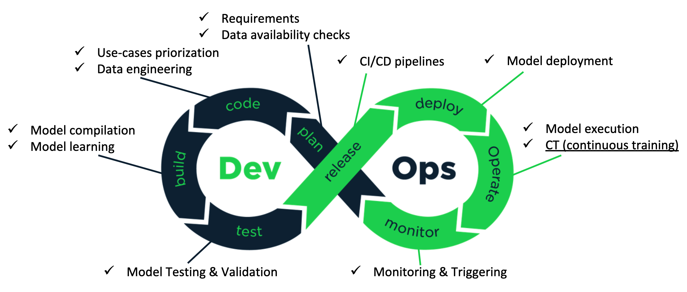
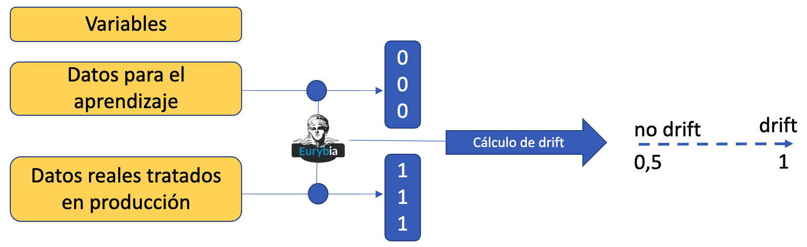

Proceso de desarrollo de software en Inteligencia Artificial
- ¿Cómo se construye (dev) y se opera y mantiene (ops) un desarrollo (producto) en IA?
- ¿Es posible aplicar una organización DevOps?
Artificial Intelligence, Machine Learning y Deep Learning : conceptos
- Artificial Inteligence tiene como objetivo aportar soluciones que permiten a un ordenador razonar y tomar decisiones sin intervención humana.
- Machine Learning : dar la capacidad a un ordenador de aprender sin una acción de programación explicita
- Deep Learning : aportar algoritmos inspirados en la forma que el cerebro humano filtra la información durante el proceso de aprendizaje

... bajo la piel de un desarrollador ML ...
... bajo la piel de un desarrollador ML ...
- Ilustración a través de un problema simple de clasificación de imágenes
- Datos de entradas: imágenes de perros y gatos.
- Tipo de problema: clasificación binaria (dos clases: perro o gato)
- Implementación
... y una vez que el modelo contruido, que?
- La puesta en producción del modelo DL resultante es sorprendentemente simple.
- TensorflowJS : con 50 líneas de código (HTML/Javascript) el modelo puede ser expuesto en una aplicación Web
- ¿Cómo estar seguro que el modelo se comporta con datos reales de la misma manera (precisión) que durante el proceso de aprendizaje?
- En IT clásico los datos reales son conocidos (edad, saldo de cuenta, temperatura, etc.)
- En ML generar/disponer las imágenes posibles y reales de perros o gatos no es viable?
- La respuesta dada por la comunidad es ... ... ... MLOps
MLOps
- Permite hacer frente a los desafíos de industrialización y mantenimiento de desarrollos en IA.
- el principal desafíos es la dificultad del modelo para adaptase a los cambios del entorno
- ¿cómo cualquier implementación? la dificultad en ML es que los cambios son más difíciles de prever e identificar

- Objetivo principal: supervisión de resultados y tests frecuentes para detectar eventuales desviaciones (drift)
MLOps
- Tipos de desviaciones
- De datos: se presenta cuando la tipología de los datos procesados en producción difiere de la tipología de los datos utilizados durante el aprendizaje.
- Ejemplo: utilización del barbijo.
- De concepto: se presenta cuando cambian las propiedades estadísticas de las variables sobre las que se basa el modelo.
- Ejemplo: cambio de hábitos de consumidores según la temporada.
- Un ejemplo de implementación: plataforma Eurybia
